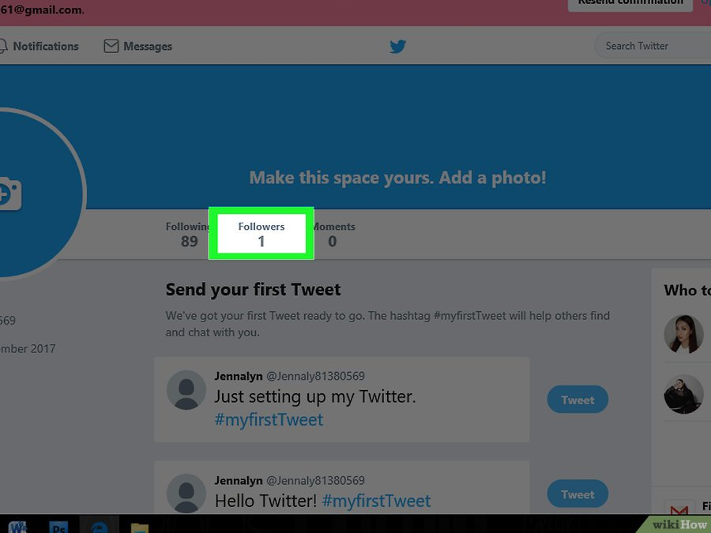

Всё о Twitter
Twitter определение
Тройка лидеров и пять популярных событий
Шесть причин для ретвита и основные факты
История
Устройство
Особенности
Как пользоваться
Правила твиттера
Возможности
Фотографии
Словарь
Карта сайта
Об авторе
Настройте свой профиль

1. Загрузите фото профиля. Эта картинка будет отображаться рядом с вашим именем. Форматы для аватара следующие: JPG, GIF или PNG, при этом файл не должен превышать 700 Кб. Чтобы загрузить аватар, зайдите в настройки профиля и нажмите на "Добавить фотографию профиля", чтобы загрузить аватар с ПК.
2. Укажите ваше имя, место проживания и сайт. Под аватаром вы можете указать свое полное имя. А можете и не указывать. Но с полным именем ваш профиль все же будет смотреться солиднее, профессиональнее. Кроме того, можно указать ваше место проживания, а также ваш сайт или блог.
3. Заполните биографию. Постарайтесь, чтобы биография была интересной. Справитесь — фолловеры наберутся легко и просто. В конце концов, решая, стоит ли подписываться на того или иного человека, многие переходят в профиль и читают там биографию. Но помните, что вам на все про все — 160 символов, так что вспомните о краткости, сестре таланта. Указывать здесь имя или сайт необязательно, для этого есть другие поля (см. выше).
4. Определитесь, хотите ли вы размещать свои твиты в Facebook. Если да, то количество просмотров одного твита будет выше. Чтобы выбрать эту опцию, нажмите на фото профиля, в выпадающем меню выберите "Настройка и конфиденциальность", в колонке слева нажмите "Приложения" и напротив надписи "Подключить к Facebook" нажмите "Подключить".
5. Укажите свой язык и часовую зону. Во вкладке настроек “Учетная запись” можно указать свой язык и часовой пояс. Выбрать и то, и другое можно из выпадающего меню. Кроме того, здесь можно сменить имя пользователя и email, если возникнет такая необходимость.